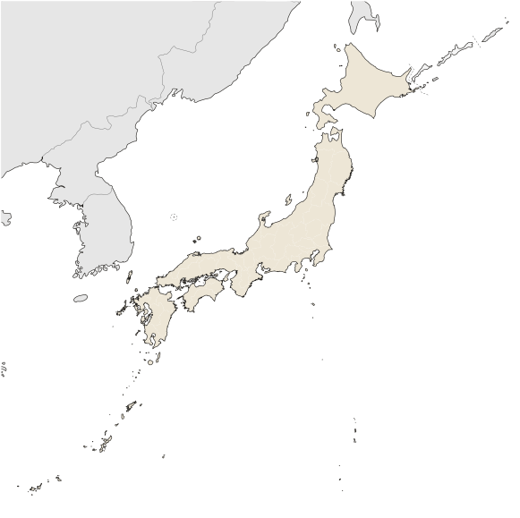

Keep this scroll beside you while you play. Every answer is on the screen. Fill in each part when the story reaches it. You will use it for the reasoning practice afterward.
A samurai family had a crest called a mon: one simple shape inside a circle. Warriors painted it on their banners, so friends and enemies knew which family they were facing. The Yamabe crest is three mountains above the waves of Hakata Bay, because Yamabe means "mountainside."
Trace the gray lines in pen, then color the crest in one or two colors, the way real crests were painted.
The three small circles, marked 一, 二 and 三 like the three acts, are for your three generations. At the end of each act, draw in that act's circle the one thing your family got from its lord: sacks of rice, a paper, a small field. If your lord gave nothing, leave the circle empty.

Four places matter in this story. Each one is a numbered point on the map. When the story names a place, use the clues on the screen to decide which number it is, and write the name on that line.
Map: Maximilian Dörrbecker (Chumwa), Wikimedia Commons, CC BY-SA 3.0, recolored.
Rice is your family's land, counted in koku. One koku feeds one person for a year. Your rice starts at 2. After every scene, look at the rice number at the top of the screen and put a dot on the chart. Connect the dots as you go.
| Act 一 · Tadayoshi | Act 二 · Yoshisuke | Act 三 · Nagamoto | ||||||||||
|---|---|---|---|---|---|---|---|---|---|---|---|---|
| 10 | ||||||||||||
| 9 | ||||||||||||
| 8 | ||||||||||||
| 7 | ||||||||||||
| 6 | ||||||||||||
| 5 | ||||||||||||
| 4 | ||||||||||||
| 3 | ||||||||||||
| 2 | ||||||||||||
| 1 | ||||||||||||
| 0 | ||||||||||||
| Start | 1 | 2 | 3 | 4 | 5 | 6 | 7 | 8 | 9 | 10 | End | |
Write the answers as you find them on the screen. The year tells you which scene to look in.
1180 Bandits burn the rice store next door, and your father writes to the emperor's governor. What comes back, and what does not come?
1180 Lord Kuwabara makes your family an offer. Write the deal in your own words.
Lord Kuwabara gets:
Your family gets:
1180 Two clans are at war for control of Japan. Which clan looks stronger that autumn, and what two things does it hold?
1185 The last battle of the war is fought in boats. Where is it, and what changes at midday that decides who wins?
1192 The emperor gives Minamoto Yoritomo a new title. What is the title, and what does it mean?
1192 The emperor still lives in Kyoto. What does he do there now, and where do the real orders come from?
1192 In the hall at Kamakura, every warrior is handed a paper. What is a vassal, and what does the paper prove?
What I gave my lord:
What my lord gave me:
The hardest choice Tadayoshi made was
It cost the family
Go to page 1 and draw what your lord gave Tadayoshi in the circle marked 一.
1232 The oath passes from father to son. Which two things pass down in full? Which one must be earned again, and why?
1232 A rider brings an order from the shogun's government in Kamakura. What does every vassal owe, and for how long?
1236 Kamakura has written a new law about warriors who fight each other over land. What must they do instead, and what happens to a lord whose vassals start a private war?
The warrior's code. Warriors call the way they are expected to live bushido. Write the name of each part, and the year in the story where you met it.
| Mark | Name of this part of the code | Where you met it (year and what happened) |
|---|---|---|
| 忠 | ||
| 勇 | ||
| 名 | ||
| 克己 |
1240 The monk at the temple teaches a kind of Buddhism called Zen. He says fear is what gets a samurai killed. How does Zen train a warrior so that he is not afraid?
What I gave my lord:
What my lord gave me:
Lord Kuwabara says something about how much land is left to give. Write his words:
The hardest choice Yoshisuke made was
It cost the family
Go to page 1 and draw what your lord gave Yoshisuke in the circle marked 二. If he gave nothing, leave it empty.
1274 For six years, letters have been arriving from Kublai Khan. Who is he, and what do his letters order Japan to do?
1274 Your scout reports three ways the Mongol soldiers fight. List all three.
1274 How do the samurai fight at first, the way they have always fought? Why does it fail against the Mongols?
1276 The shogun's government orders something built along the whole shore of Hakata Bay. What is it, and who pays for the stone, the workers, and the rice?
1281 A typhoon breaks both Mongol fleets. What do the priests call the storm, and what does the name mean?
1285 Lord Kuwabara rides home from Kamakura with nothing. In every war before this one, where did the land for rewards come from? Why is there none this time?
What I gave my lord:
What my lord gave me:
The whole oath. Look back at your three ledgers and your rice chart.
Did your lord keep his side of the oath in Act One? yes / no In Act Three? yes / no Could any of your ten choices have changed that? yes / no
Circle every place on your rice chart where the rice went up. Who gave it to you each time?
Finish the sentence: The deal between a lord and his vassal only worked as long as
The shogun's government could not pay its warriors after 1281. What happened to it within fifty years?
650 years later. In the 1940s, Japan's government used two words from this story, bushido and kamikaze. Write one way it changed what the old idea meant.
Go to page 1 and fill in the circle marked 三, or leave it empty. Then open the reasoning practice.
Ten este pergamino a tu lado mientras juegas. Todas las respuestas están en la pantalla. Llena cada parte cuando la historia llegue a ese punto. Después lo usarás para la práctica de razonamiento.
Una familia samurái tenía un escudo llamado mon: una sola forma sencilla dentro de un círculo. Los guerreros lo pintaban en sus banderas para que todos supieran qué familia era. El escudo de los Yamabe es tres montañas sobre las olas de la bahía de Hakata, porque Yamabe significa "ladera de la montaña".
Repasa las líneas grises con pluma y luego colorea el escudo con uno o dos colores, como se pintaban los escudos de verdad.
Los tres círculos pequeños, marcados 一, 二 y 三 como los tres actos, son para tus tres generaciones. Al final de cada acto, dibuja en el círculo de ese acto lo que tu familia recibió de su señor: sacos de arroz, un papel, un campo pequeño. Si tu señor no dio nada, deja el círculo vacío.
Cuatro lugares importan en esta historia. Cada uno es un número en el mapa. Cuando la historia nombre un lugar, usa las pistas de la pantalla para decidir qué número es y escribe el nombre en esa línea.
Mapa: Maximilian Dörrbecker (Chumwa), Wikimedia Commons, CC BY-SA 3.0, con colores cambiados.
El arroz es la tierra de tu familia, contada en koku. Un koku alimenta a una persona durante un año. Tu arroz empieza en 2. Después de cada escena, mira el número de arroz en la parte de arriba de la pantalla y pon un punto en la gráfica. Une los puntos conforme avanzas.
| Acto 一 · Tadayoshi | Acto 二 · Yoshisuke | Acto 三 · Nagamoto | ||||||||||
|---|---|---|---|---|---|---|---|---|---|---|---|---|
| 10 | ||||||||||||
| 9 | ||||||||||||
| 8 | ||||||||||||
| 7 | ||||||||||||
| 6 | ||||||||||||
| 5 | ||||||||||||
| 4 | ||||||||||||
| 3 | ||||||||||||
| 2 | ||||||||||||
| 1 | ||||||||||||
| 0 | ||||||||||||
| Inicio | 1 | 2 | 3 | 4 | 5 | 6 | 7 | 8 | 9 | 10 | Final | |
Escribe las respuestas conforme las encuentres en la pantalla. El año te dice en qué escena buscar.
1180 Unos bandidos queman el almacén de arroz de la granja vecina, y tu padre le escribe al gobernador del emperador. ¿Qué llega de vuelta, y qué no llega?
1180 El señor Kuwabara le hace una oferta a tu familia. Escribe el trato con tus propias palabras.
El señor Kuwabara recibe:
Tu familia recibe:
1180 Dos clanes están en guerra por el control de Japón. ¿Qué clan parece más fuerte ese otoño, y qué dos cosas tiene en su poder?
1185 La última batalla de la guerra se pelea en barcos. ¿Dónde es, y qué cambia al mediodía que decide quién gana?
1192 El emperador le da a Minamoto Yoritomo un título nuevo. ¿Cuál es el título, y qué significa?
1192 El emperador sigue viviendo en Kyoto. ¿Qué hace allí ahora, y de dónde vienen las órdenes de verdad?
1192 En la sala de Kamakura, a cada guerrero le entregan un papel. ¿Qué es un vasallo, y qué demuestra el papel?
Lo que le di a mi señor:
Lo que mi señor me dio:
La decisión más difícil de Tadayoshi fue
Le costó a la familia
Ve a la página 1 y dibuja lo que tu señor le dio a Tadayoshi en el círculo marcado 一.
1232 El juramento pasa de padre a hijo. ¿Qué dos cosas pasan completas al hijo? ¿Cuál hay que ganarse de nuevo, y por qué?
1232 Un jinete trae una orden del gobierno del shogun en Kamakura. ¿Qué debe cada vasallo, y por cuánto tiempo?
1236 Kamakura ha escrito una ley nueva sobre los guerreros que pelean entre ellos por la tierra. ¿Qué deben hacer en lugar de pelear, y qué le pasa a un señor cuyos vasallos empiezan una guerra privada?
El código del guerrero. Los guerreros llaman bushido a la forma en que se espera que vivan. Escribe el nombre de cada parte, y el año de la historia en que la conociste.
| Marca | Nombre de esta parte del código | Dónde la conociste (año y qué pasó) |
|---|---|---|
| 忠 | ||
| 勇 | ||
| 名 | ||
| 克己 |
1240 El monje del templo enseña un tipo de budismo llamado Zen. Dice que el miedo es lo que hace que maten a un samurái. ¿Cómo entrena el Zen a un guerrero para que no tenga miedo?
Lo que le di a mi señor:
Lo que mi señor me dio:
El señor Kuwabara dice algo sobre cuánta tierra queda para dar. Escribe sus palabras:
La decisión más difícil de Yoshisuke fue
Le costó a la familia
Ve a la página 1 y dibuja lo que tu señor le dio a Yoshisuke en el círculo marcado 二. Si no dio nada, déjalo vacío.
1274 Durante seis años han llegado cartas de Kublai Khan. ¿Quién es él, y qué le ordenan sus cartas a Japón?
1274 Tu explorador informa de tres maneras en que pelean los soldados mongoles. Escribe las tres.
1274 ¿Cómo pelean los samuráis al principio, como siempre han peleado? ¿Por qué eso falla contra los mongoles?
1276 El gobierno del shogun ordena construir algo a lo largo de toda la orilla de la bahía de Hakata. ¿Qué es, y quién paga la piedra, los trabajadores y el arroz?
1281 Un tifón destroza las dos flotas mongolas. ¿Cómo llaman los sacerdotes a la tormenta, y qué significa ese nombre?
1285 El señor Kuwabara vuelve de Kamakura sin nada. En todas las guerras anteriores, ¿de dónde salía la tierra para las recompensas? ¿Por qué esta vez no hay?
Lo que le di a mi señor:
Lo que mi señor me dio:
El juramento completo. Mira de nuevo tus tres registros y tu gráfica del arroz.
¿Tu señor cumplió su parte del juramento en el Acto Uno? sí / no ¿En el Acto Tres? sí / no ¿Alguna de tus diez decisiones pudo haber cambiado eso? sí / no
Encierra en un círculo cada lugar de tu gráfica donde el arroz subió. ¿Quién te lo dio cada vez?
Completa la oración: El trato entre un señor y su vasallo solo funcionaba mientras
El gobierno del shogun no pudo pagarles a sus guerreros después de 1281. ¿Qué le pasó en los siguientes cincuenta años?
650 años después. En los años 1940, el gobierno de Japón usó dos palabras de esta historia, bushido y kamikaze. Escribe una manera en que cambió lo que significaba la idea antigua.
Ve a la página 1 y llena el círculo marcado 三, o déjalo vacío. Luego abre la práctica de razonamiento.